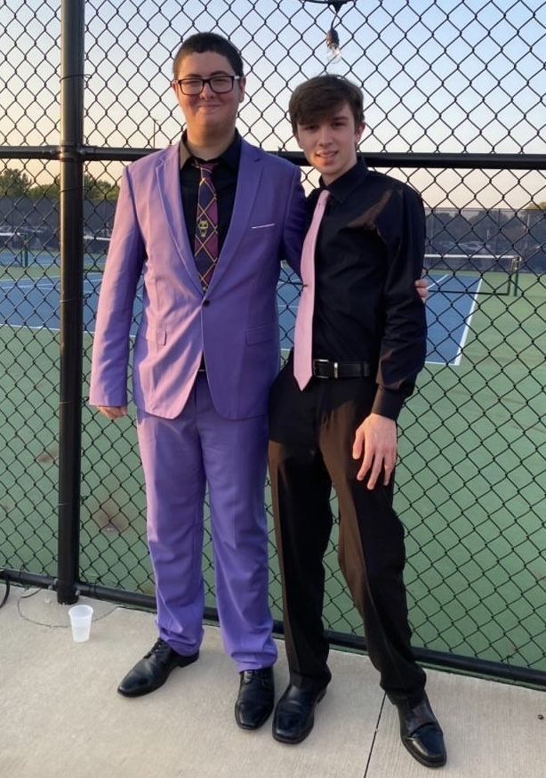

I have loved technology my entire life, and I hope to go to either Purdue or IU Bloomington and major in Computer Science for college. In the future I hope to have a career as a software developer, and potentially a game developer.
Hello, I'm Gavin Davis. I am a 17-year-old rising senior in high school, and I am excited to see what my future brings.
Some of my main interests and hobbies are playing video games, playing the piano, coding, and spending time with my family members, friends, and pets. I have also taken 5 years of French, and have a strong interest in the countries France and Japan because of their cultures and contributions to the world.
I have loved technology my entire life, and I hope to go to either Purdue or IU Bloomington and major in Computer Science for college. In the future I hope to have a career as a software developer, and potentially a game developer.
I am a member of my school's robotics team, where I have learned so much about STEM and engaged in a lot of fun hands on engineering as well as coding with some of my best friends. I have also taken two years of Computer Science classes in high school, including AP, where I have practiced Python, HTML, CSS, and JavaScript to varying degrees.
Last but not least, I am interning this summer through the Nextech Catapult program where I'm making this website, practicing coding, hearing from industry professionals, going on tours with tech companies, and meeting a ton of very cool people.